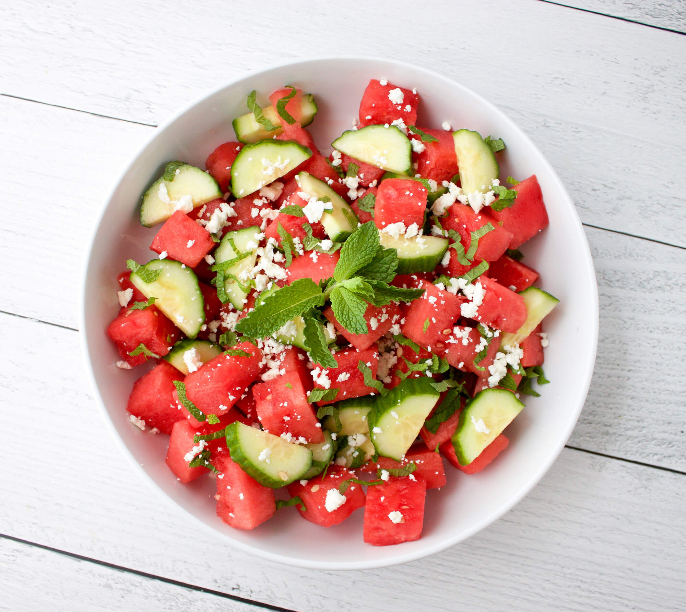

Watermelon & Cucumber Salad

Description
This salad is perfect for a hot summer day. It's light. It's fresh. What more could you ask for!?
Ingredients:
- 3 cups watermelon (cubes or balled, your preference)
- 1.5 cups sliced cucmber (remove the seeds or you'll hate yourself)
- 2 tablespoons mint (thinly sliced or small leaves)
- .3 cup feta cheese (crumbled)
- 3 tablespoons olive oil (I don't have anything to put in parenthesis but I feel the need to be consistent)
- 1 tablespoon lime juice (make sure you don't have any cuts on your hands)
Instructions:
- Place the watermelon, cucumber, and mint into a large bowl.
- In a small bowl, whisk together the olive oil and lime juice. Add salt and pepper to taste.
- Drizzle dressing over the melon mixture and toss to coat. Sprinkle with feta and serve.